Lesson 910 minutesThe Lake Shuttle, with Ana Other and Lee Leader
Working as a team
Add a colleague to a document, pass it on, approve an executive's suggested edit, and take the whole record with you in a project file.
Why it matters
Documents change hands. People go on leave, Leads pick things up, and executives want a say. VersionPoint keeps one person in charge, lets others help, and makes sure an executive's edit is decided like anyone else's, with the decision in the record.
Watch
Who can work on a document
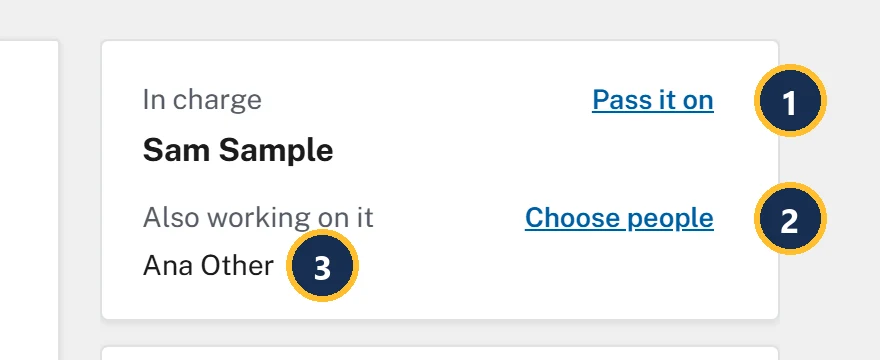
- In charge is one person. Pass it on hands the document to someone else.
- Also working on it is everyone else you've added. Choose people changes the list.
- Ana Other is on the release now.
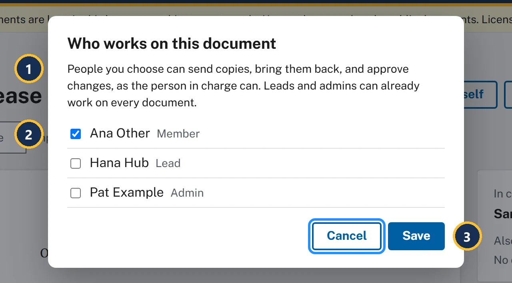
- People you add can do what the person in charge does with copies and decisions. Leads and Admins can already work on every document.
- Tick each person to add. Only the comms team is listed: Executives aren't, because they suggest edits instead.
- Save adds them, and each one gets a notification.
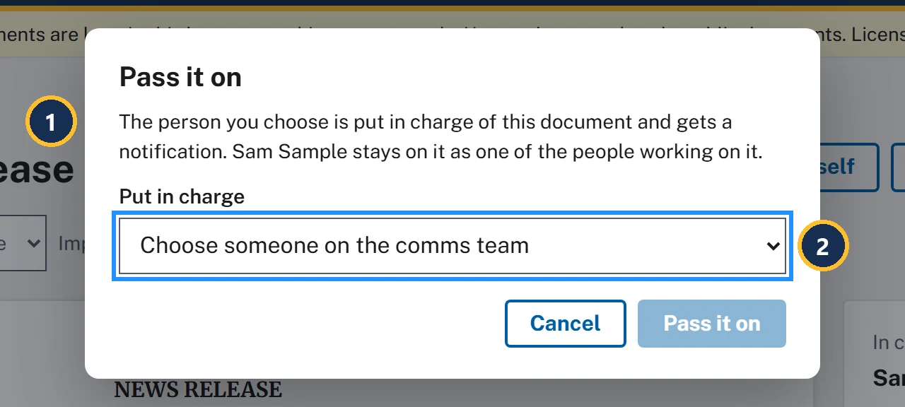
- The new person in charge gets a notification, and you stay on the document as one of the people working on it.
- Put in charge lists the comms team: Ana Other (Member), Hana Hub (Lead) and Pat Example (Admin).
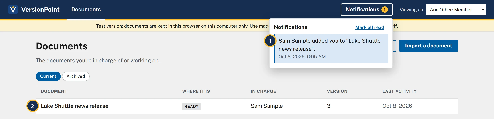
- Sam Sample added you to the release. Choosing the notification opens the document.
- The release is on Ana's Documents list now, with Sam Sample still in charge.
| Who | What Documents says | Filters |
|---|---|---|
| Member | The documents you're in charge of or working on. | Current, Archived |
| Lead or Admin | Every document in the office's library. | All, Mine, Archived |
| Executive | Every document in the office. Your edits go to the comms team to approve. | All, Archived |
An executive's suggested edits
An Executive can open any document but can't send it, decide on it or import anything. What they can do is suggest edits, and every one of them waits for the comms team.
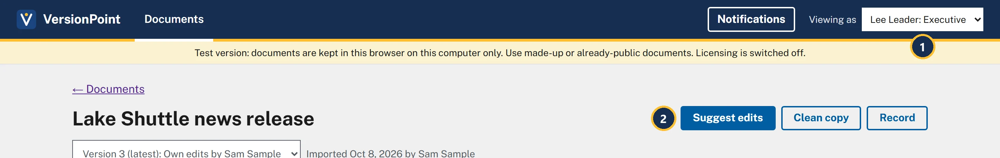
- Lee Leader, the office's Executive.
- Suggest edits, Clean copy and Record: nothing else. Suggest edits makes a copy with Track Changes locked on, Lake Shuttle news release - edits by Lee Leader - round 3.docx.
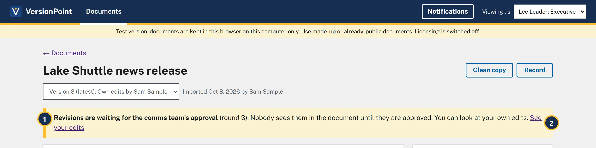
- Revisions are waiting for the comms team's approval. The document still reads as version 3.
- See your edits opens round 3 for Lee to look at, with no Accept or Reject.
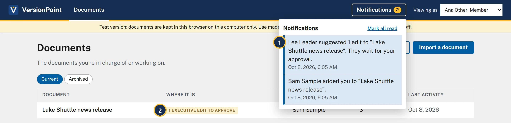
- Lee Leader suggested 1 edit. Choosing it opens round 3, ready to decide.
- 1 executive edit to approve on Documents. You decide it like any reviewer's revision: Accept or Reject, a reason if you like, then Finish.
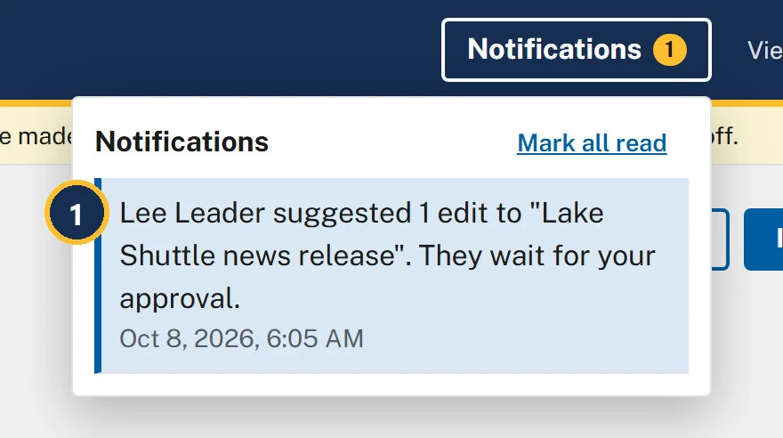
- The same notification Ana got. Every Lead is told about an Executive's edits, as well as the person in charge and the people added.
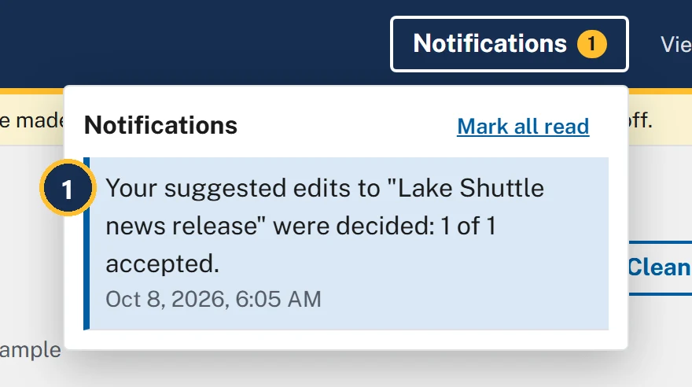
- Lee's suggested edits were decided: 1 of 1 accepted. Lee can open the round to see each decision and any reason.
When someone leaves
If the person in charge leaves, an Admin marks them Has left on the Office page. Nothing is lost: their documents say Sam Sample is no longer in the office. The document and its record are all here., and the Admin's page lists every document that needs someone new in charge. An Admin or a Lead then uses Pass it on. Back again undoes it. The add-on course for Admins walks through it.
The project file
Project file on the document page downloads the document with its whole record: Lake Shuttle news release.vpproj. On another computer, Open a project file on Documents brings it in. Its form says: A project file (.vpproj) holds a document with its whole record: versions, rounds, decisions and notes. Someone on the team can pass one to you until the office's SharePoint library is connected.
Try it
Start on the document page of Lake Shuttle news release, version 3, as Sam Sample. You'll switch people with Viewing as at the top; in your agency's VersionPoint each person signs in as themselves. Lee Leader's edit comes from the reviewer's desk, which plays Lee when you give it Lee's copy.
- The reviewer's desk: plays the reviewer on a copy you downloaded.
- In Viewing as, choose Ana Other: Member. Documents says No documents yet: Ana isn't on the release.
- Switch back to Sam Sample: Member and open the release. Choose Choose people, tick Ana Other, and choose Save. Also working on it now says Ana Other.
- Choose Pass it on and look at the form, then choose Cancel. You stay in charge.
- Switch to Ana Other: Member and choose Notifications. It says Sam Sample added you to the release, and the release is in Ana's list. Choose Notifications again to close it.
- Switch to Lee Leader: Executive, open the release, choose Suggest edits, then Make the copy, then Done. The banner says Lee Leader is suggesting edits, with the date and round 3.
- On the reviewer's desk, choose Lee's copy, Lake Shuttle news release - edits by Lee Leader - round 3.docx, then choose Download the returned file.
- Back on the release, still as Lee, choose Bring back your edits and choose Lee's returned file. Round 3 opens with one card and no Accept or Reject. Choose ← Lake Shuttle news release: the banner says Revisions are waiting for the comms team's approval.
- Switch to Ana Other: Member. On Documents, the release is tagged 1 executive edit to approve, and Notifications has Lee Leader suggested 1 edit. Switch to Hana Hub: Lead and choose Notifications: Hana has it too.
- Switch to Sam Sample: Member, open the release and choose Decide revisions. On card 1 (Families told us becomes Riverton families told us), choose Accept, then Finish. The version list says Version 4 (latest): Edits by Lee Leader (executive), approved.
- Switch to Lee Leader: Executive and choose Notifications. It says Lee's suggested edits were decided: 1 of 1 accepted.
- Switch back to Sam Sample: Member, open the release and choose Project file. Lake Shuttle news release.vpproj downloads. Keep it: it's your backup of everything so far.
Check your work
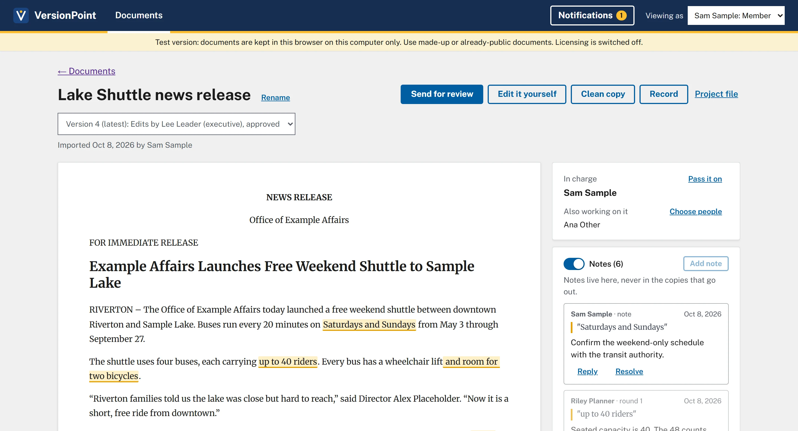
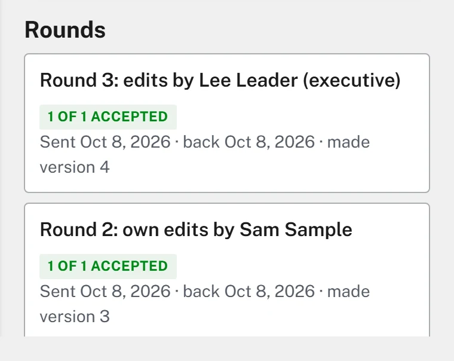
Watch out for
Quick check
Pick an answer to see why it is or isn't right. Nothing is scored or sent anywhere.
Question 1
You're going on leave. Ana will cover the Lake Shuttle release. What's the least you need to do?
Question 2
An Executive rewrote the director's quote with Suggest edits. What happens to the document?
Question 3
Sam has left the agency. Who can put someone else in charge of Sam's documents?
The final project puts it all together: a full round with Sky Counsel, from review copy to finished release.